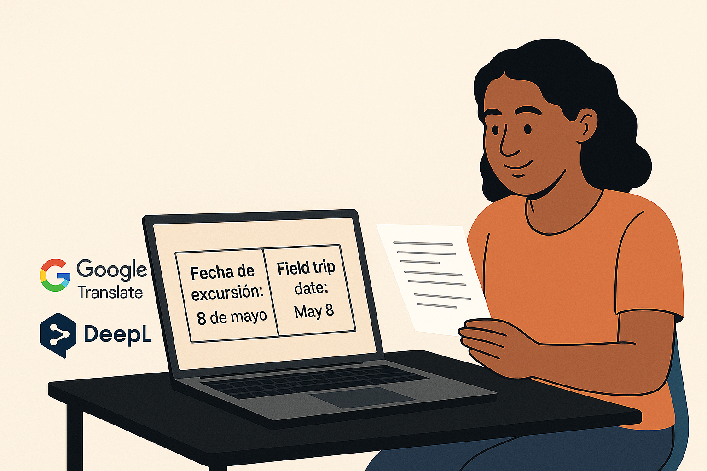
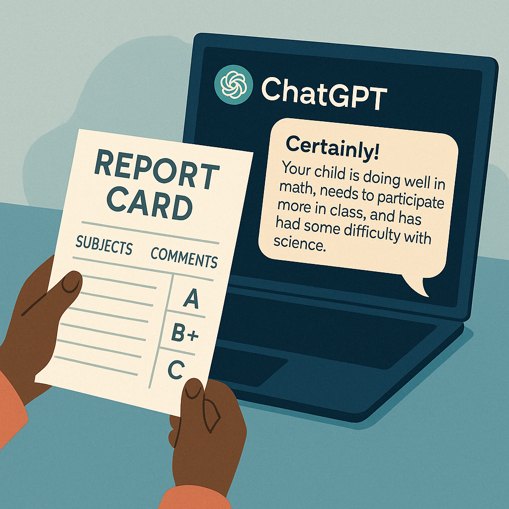
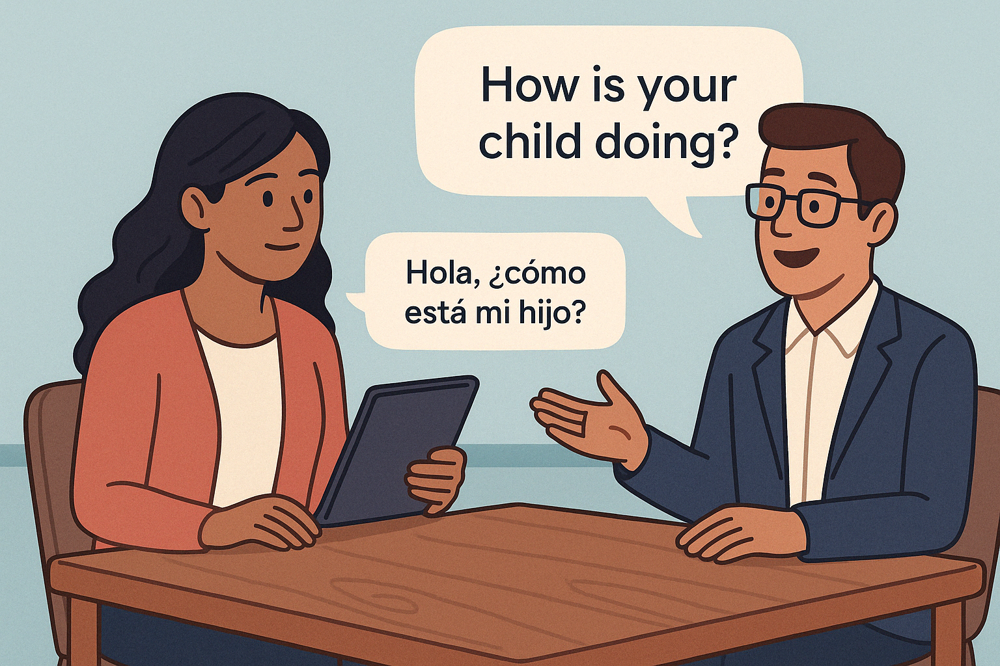

👨👩👧👦 Parent-Teacher Bridges with AI
AI can help parents communicate with teachers, understand student reports, and participate in their child’s education — even with language barriers or busy schedules.
📋 Step-by-Step Guide
Step 1: Translate school messages
Paso 1: Traduce los mensajes escolares
When parents receive messages from the school — such as a flyer, an email, or a notice from the teacher — they can feel overwhelmed if it's written in a language they don’t understand. Translation tools like Google Translate and DeepL allow you to copy that text and instantly convert it into your preferred language. This makes it possible to understand important announcements, report card dates, field trips, or discipline notices without needing to wait for someone to interpret it.
Step 2: Summarize report cards with AI
Paso 2: Resume boletas con IA
Sometimes, report cards or academic progress reports use complicated language that’s hard to follow. You can copy the full message into ChatGPT and ask it to “summarize this in simple words” or “tell me what this means for my child.” AI can help you focus on the important parts, like grades, attendance, or behavior, and explain them in a way that’s easy to understand, no matter your language background.
Step 3: Draft responses to teachers
Paso 3: Redacta respuestas a los maestros
AI can also help you write back to a teacher. Whether you want to say thank you, ask a question about your child, or express a concern, ChatGPT can help you write a polite and clear message. Just tell it what you want to say, and it will offer a corrected and translated version for you to send. This is helpful for parents who feel shy about their writing or aren’t sure how to phrase things professionally.
Step 4: Simulate a parent-teacher meeting
Paso 4: Simula una reunión padre-maestro
Preparing for a parent-teacher conference? AI can simulate the meeting for you. Ask it, “Act like my child’s teacher and ask me questions,” and practice your answers. It can respond in Spanish, English, or both, so you build confidence before the real meeting. This is especially helpful if you're nervous, new to the school system, or worried about language barriers.
Step 5: Build confidence with everyday use
Paso 5: Gana confianza usándola diariamente
The best way to feel confident is to use AI tools a little every day. Whether you’re reading a school handout, asking a question, or preparing a response, each step helps you get more comfortable. AI doesn’t judge, it’s patient, and it’s there for you 24/7 — so even parents with little time or English skills can stay involved in their child’s education.
🔗 Helpful Tools
Google Translate
translate.google.com
Great for translating school messages and announcements.
ChatGPT (OpenAI)
chat.openai.com
Helps you summarize, rewrite, or practice communication in a safe space.
TalkingPoints for Families
talkingpts.org/families
A real messaging app that connects teachers and families in their preferred languages.